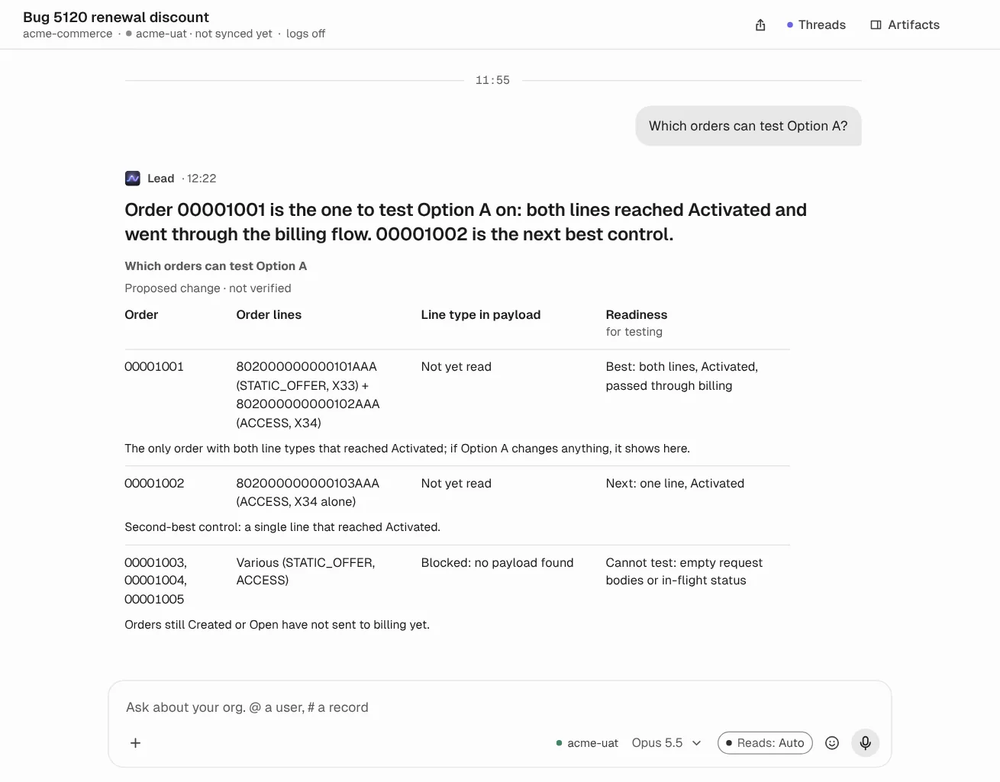
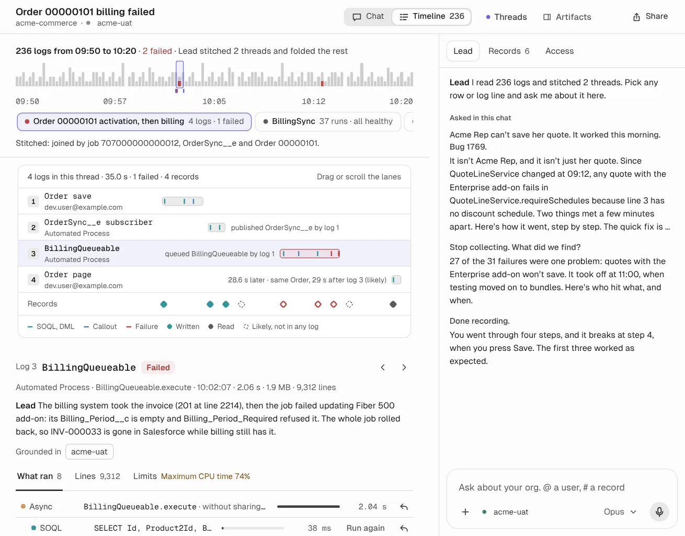
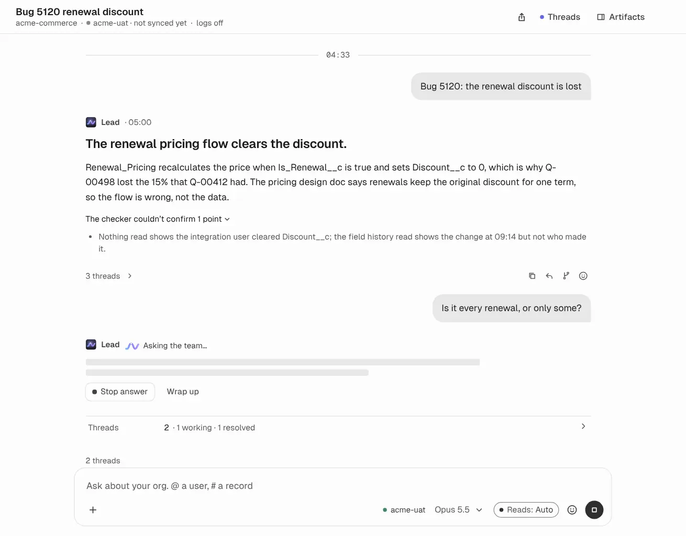

Ask your org. Get the reason.
Telltale is a Mac app for Salesforce developers and QAs. It reads your org, your tickets, your code and your debug logs, then tells you what is going on and shows its proof.
Latestv1.9.0 beta·November 26, 2026
New here? Setup takes five minutes.
Not sure which? Apple menu › About This Mac: Chip "Apple M…" means Apple Silicon, Processor "Intel" means Intel.


Ask a question and get the cause, with the path it took.
Screens from the app, with made-up data.
One teammate for the whole investigation.
Ask your org in plain words
Type a question the way you would ask a colleague. Use @ for a person or a field and # for a record, a ticket or a design doc. Telltale reads the org and answers with a short explanation or a table.
- Everyday questions get quick answers; heavy cases bring in the team
- Answers list what they were based on

See what failed, as it fails
Name the user and the record you are tracing. Telltale turns logging on for them, reads each log as it arrives and explains what ran, where it broke and what to change. Pick a log line and ask about it, and your reply carries a quote of those lines.
- Big debug logs are read whole, up to the size Salesforce keeps
- Logs that share a record are stitched into one story
- Logs and write-ups name people and records, not IDs

From the ticket to the code
Give it a story or bug number. Telltale reads the ticket live, including pictures pasted into it, then checks the steps against the org and reads the code that ran. Jira, Azure DevOps and ServiceNow are supported.
- Reads the text files in your code folder and keeps its Salesforce Code Graph up to date
- Compares one thing across two orgs, your code folder and a git branch
- Answers cite the file and the line

Write-ups, flowcharts and exports
Answers come with diagrams where a picture helps. Record a run and Telltale writes it up as a how-to or a bug report for you to edit and share. Ask in the chat and it can draft a document too.
- Flowcharts and sequences you can open step by step
- Export a chat as PDF, Word or Markdown
- Secrets and tokens Telltale recognises are taken out first

Slack, your wiki and your own tools
Connect what your team already uses. Telltale searches your Slack or Teams messages, reads Confluence pages and talks to your own tool servers. It reads, and never posts by itself unless you allow it. A reply is a draft you send, or one that sends after a 5-second Cancel where you turned that on.
- Paste a Slack thread link and get a drafted reply to edit
- A reply leaves when you press Send, or after a 5-second Cancel where you allowed automatic sending
- Connectors you already set up on your Mac are found for you to trust

Answers you can check
Your lead splits a question across specialists that each check one thing. A separate Answer checker reviews findings and says plainly what it could not confirm.
- Production reads always ask first. Sandboxes read freely unless you say otherwise, and logging in production needs your confirmation
- A fix is checked and deployed only to a non-production org, and only when you click. A one-call action that changes data also runs only on your click, in a non-production org, and can’t be undone
- Emails, phone numbers, names in the fields you list and secrets are masked before text goes to a model. It can miss a value, and pictures go as they are

What's new
Installing takes a minute.
- DownloadPick the download for your Mac above.
- Open itOpen the download in your Downloads folder. A window opens with Telltale in it.
- Drag to ApplicationsDrag Telltale into Applications, then open it from Applications.
Telltale needs macOS 13 or later. It is signed with a Developer ID and notarized by Apple, so it opens like any other app. The first time, macOS may ask you to confirm that you want to open an app downloaded from the internet. Choose Open.
Tell us how it went.
Rate it, report a bug, suggest a feature or ask a question. No account needed. It takes about a minute and it shapes what gets fixed next.
Where it’s been downloaded.
Downloads counted by GitHub (zip files, updates included). Countries show downloads started from this page in the last 90 days. Only the country is kept, never anything about who downloaded.
Where the downloads came from